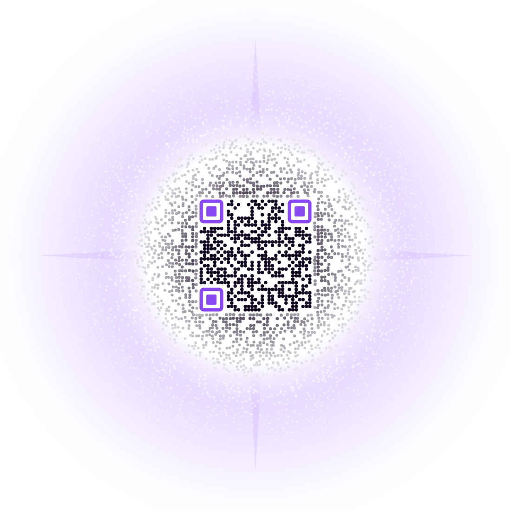

The junk field is back, warped. The same rounded-square vocabulary now runs continuously from inside the code out into the star, so the square has nowhere to announce itself.
The thing that actually dissolved the square was colour, not shape. Junk next to the code is the code’s own near-black, so the boundary stopped being a light/dark step — the field just continues — and only brightens into the corona further out, where it stops looking like data and starts looking like light. Scan them; they all point at the Void’s Horizon page.
Same code, same star, different geometry for the field around it.


These score worse than the plain-disc versions did, and that is not a bug to fix — it is the price. Every bit of blending that makes the square stop being findable by you also makes it marginally harder to find for a decoder, because both are looking for the same boundary. Dissolve and long rays hide it best and score lowest; rings keeps the most margin and hides it least.
All of which is OpenCV, which you have already shown is pessimistic against a real camera — it called your gap-0 code poor and your phone reads it every time. So treat the numbers as a ranking of risk, not a pass/fail, and let your phone settle it. If the one you like best scans reliably in your hand, that is the answer.